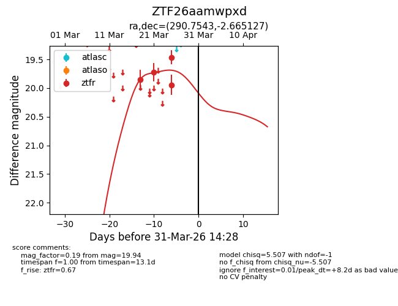
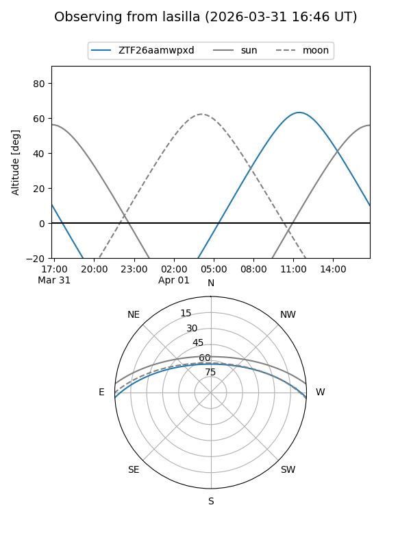
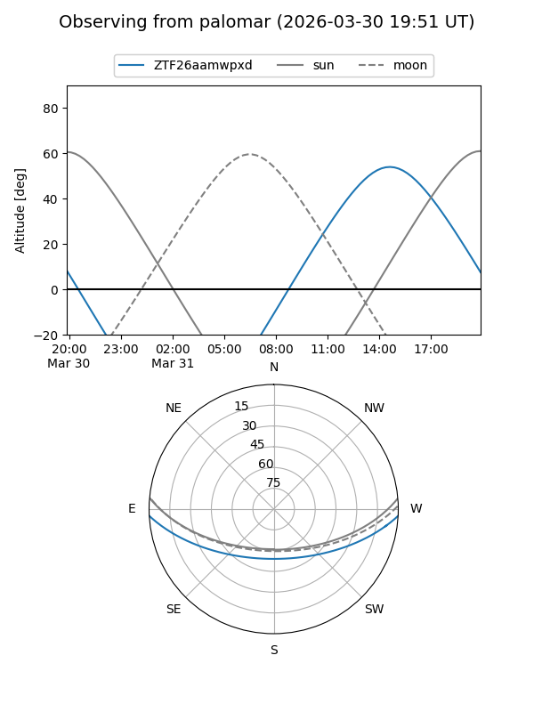
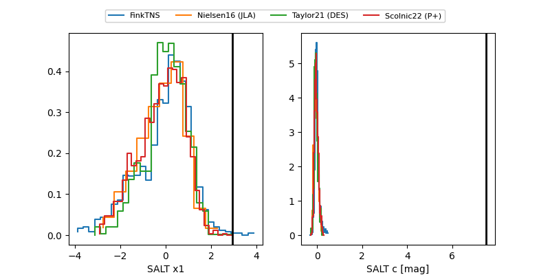

ZTF26aamwpxd
Target ZTF26aamwpxd at 2026-03-31 14:31
Aliases and brokers:
FINK: link
Lasair: link
ALeRCE: link
alt names
ZTF26aamwpxd (ztf,fink_ztf)
Coordinates:
equatorial (ra, dec) = 290.7543,-2.66513
equatorial (HMS+DMS) = 19:23:01.03,-02:39:54.46
galactic (l, b) = (34.1583,-8.23970)
Flags:
Photometry:
last ztfr=19.94
4 ztfr detections
Lightcurve

Visibility


Additional plots
